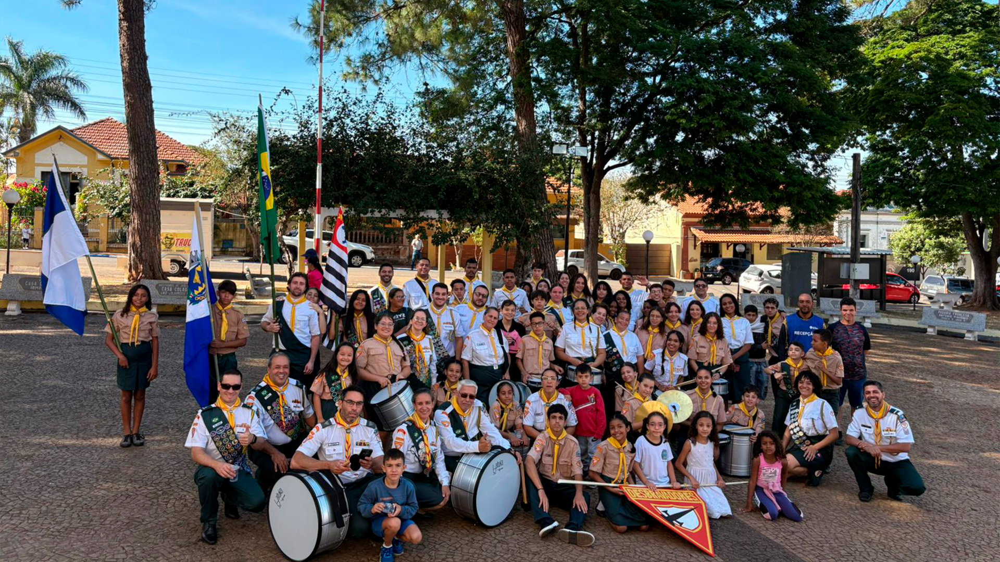
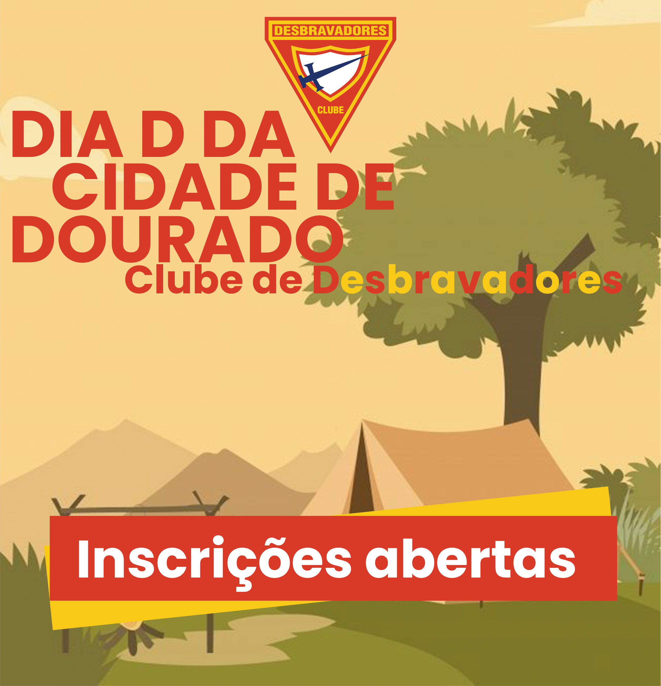

Nossa História: Guardiões Dourados
Fundação do Clube
Setembro de 2024A diretoria se reúne para o pontapé inicial do clube. As três opções de nome, Guardiões Dourados, Cavaleiros Dourados e Estrela de Ouro, são debatidas. O nome final, Guadiões Dourados, é escolhido como principal opção para representar a identidade do grupo.
Início das Reuniões
Outubro de 2024As primeiras reuniões regulares do clube começam, marcando o início das atividades e da formação do grupo.
Primeiro Dia D
12 de outubro de 2024Participamos do Dia D na cidade, anunciando oficialmente a abertura das inscrições para novos membros, com a ajuda de clubes vizinhos.
Criação da Primeira Logo
Outubro de 2024Uma logo inicial é criada com a ajuda de inteligência artificial, dando ao clube sua primeira identidade visual.

Reuniões Contínuas e Crescimento
Ao longo do ano de 2025Participamos do Dia D na cidade, anunciando oficialmente a abertura das inscrições para novos membros, com a ajuda de clubes vizinhos.
Primeiro Campori
Outubro de 2024Antes da oficialização, o clube vive a emocionante experiência do seu primeiro campori, uma aventura que se tornou possível com o apoio e a ajuda do clube Kadima de Boraceia
Investiduras
Ao longo do ano de 2025Apesar das questões burocráticas que impedem a oficialização, o clube celebra as primeiras investiduras, reconhecendo a dedicação e o progresso de seus membros.
Primeiro Campori
Outubro de 2024Antes da oficialização, o clube vive a emocionante experiência do seu primeiro campori, uma aventura que se tornou possível com o apoio e a ajuda do clube Kadima de Boraceia
Investiduras
Ao longo do ano de 2025Apesar das questões burocráticas que impedem a oficialização, o clube celebra as primeiras investiduras, reconhecendo a dedicação e o progresso de seus membros.